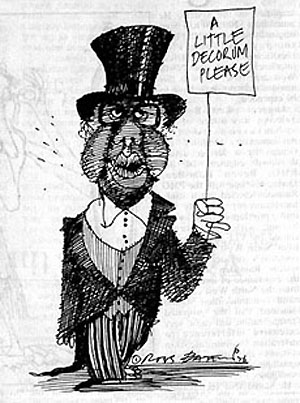

|
SOME OF the loudest and ugliest street
scenes in Melbourne for years were seen on wednesday night when
Australia's current govenor general sir John Kerr went to dinner. Even
sir John looked shocked at the ferocity of the demonstration.
In a punchpacked evening
involving about 1000 yelling, screaming, chanting men and women, tempers
toppled as frustrated demonstrators realised they were outmaneuvered by the victorian police who seemed to have learned their
tactical lesson after the debacle outside the Royal Commonwealth society
two weeks earlier.
Twelve people were
arrested and two girls were injured: one girl was trampled by a police
horse and another had a foot run over by a taxi carrying dinner guests
which accelerated in an attempt to plough a path through the demonstrators blocking Wallen road just up from the Leonda restaurant,
venue for the dinner. Guests walking through the demonstrators were
pushed, jostled, spat upon and had various missiles thrown at them.
When the first
demonstrators arrived late in the afternoon they found that police had
closed off over two kilometres of one of Melbourne's busiest arterial
roads, Swan street, on the city side of the Yarra and were not allowing
any pedestrian or vehicular traffic through until a couple of hundred metres
beyond the Leonda where the name changes to Wallen road. Police were
also lining the Yarra riverfront behind the Leonda and had a patrol boat
on the river.
In addition the police
diverted all traffic for a radius of four kilometres around the Leonda.
Reliable sources indicate that almost 500 police were involved in the
complete operation.
In addition, a heavy
rumour had been spread that Kerr would not be coming to the dinner from
the direction of Melbourne so the majority of the demonstrators were at
the Hawthorn end to greet him and missed the opportunity. Staff of
Melbourne TV stations had been given
the same misinformation and missed being able to film his arrival at
the Leonda except from a distance. Their night floodlamps were all set up in the wrong direction.
As each person was
arrested they were taken to the rear of a paddy wagon,
photographed at least twice by a police photographer and then placed in the
wagon.
When sir John Kerr's car arrived at 6.48 pm demonstrators nearest the
Leonda tried to push forward but the solid line of police stood firm.
Smoke bombs were then thrown in
rapid
|
 |

succession towards Kerr's car and
at police horses directly behind the police line. Marbles were also
thrown under the horses hooves.
The girl injured by the police horse was hurt as a group of mounted
police rode into a crowd of demonstrators trying to block the path of
sir John's car. Kerr's car was dented when a young demonstrator threw a
banner pole at it. Police horses backing into the Rolls, as they tried
to force demonstrators back, kicked dents in door panels. It is alleged
that police seized a knife from a young demonstrator just before sir
John arrived.
A
walkout on sir John Kerr had been planned to take place during the law
institute dinner by young radical lawyers. I understand that the old boy
network made it known to members of the Young Lawyers association that
if they attempted a walkout or any other form of protests against sir
John it would not be forgotten, and would be a heavy hindrance to their
progress in the profession.
Following
this velvet glove approach, a number of radical lawyers decided not to
attend the $16 a head dinner at the Leonda and instead joined the
demonstrators behind the barricades to indicate their feelings.
Before sir John left the dinner the president of the National Australia
Association, Alex Psalti, issued a statement in which he called for
demonstrators to be conscripted. As sir John left the dinner a bottle
smashed against his car.
|